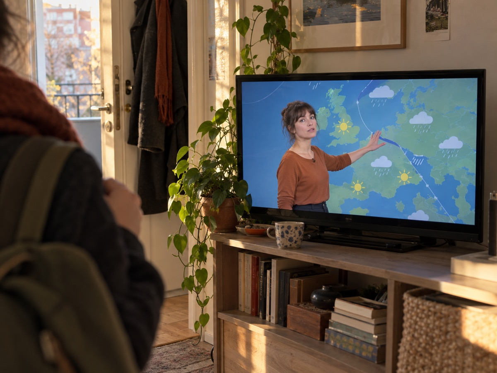
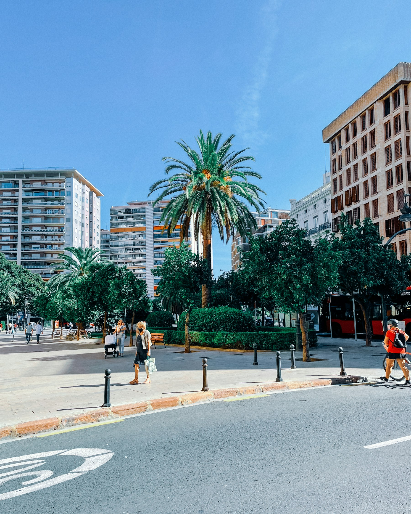
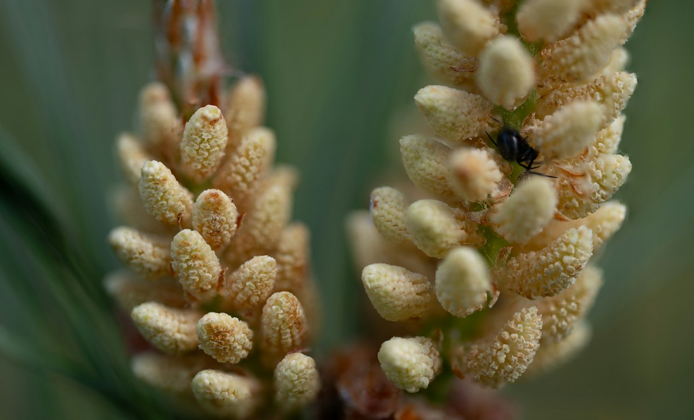

FerryWellCo · What we are building
We started FerryWellCo because a forecast leaves too much to work out
People can see the temperature and an air-quality reading, but still have to work out what those numbers mean for the activity ahead. We bring environmental research and spatial information into the tools people already use to plan time outdoors.

The forecast has plenty to say. What does it mean for your day?
Illustrative scenesWhy this matters
The numbers leave out what happens during activity
Heat can place strain on the heart. During exertion, a person breathes more air, including pollutants. Pollen can be another consideration. These conditions vary with place and time, while the person looking at a forecast still has to decide what to do with their plan.


Our first example
What if the app helped with the decision?
GOTime is our first product concept. In a sample wellness app, it compares the conditions for a planned run with another available time and puts the answer first.
See the GOTime example ↗Our mission
We want the research to reach the moment someone makes a plan
FerryWellCo brings research on heat and air pollution together with information about place, time and activity. We are building tools for wellness platforms, where people already make outdoor plans. We are also exploring how the same approach might help teams planning outdoor work.

The people behind the work
Meet the team doing the work
We began with research into air pollution, heat and cardiovascular health. Now we are working out how to make that knowledge useful in the tools people already use.

Another setting we are exploring
We are also exploring outdoor work
Teams planning outdoor work also face decisions about heat and air quality. We are speaking with organisations to understand where environmental intelligence could help them plan.
Tell us about your work ↗Articles and updates
Notes from the work, soon
We are making room here for articles we share on LinkedIn, short research notes and updates from the team. There is no feed yet. When we have something worth saying, it will live here too.
Contact
Tell us where people plan activity in your app
If you build a wellness platform, we would like to hear where people plan activity in your product. We also welcome questions about outdoor work, the research and the demo.